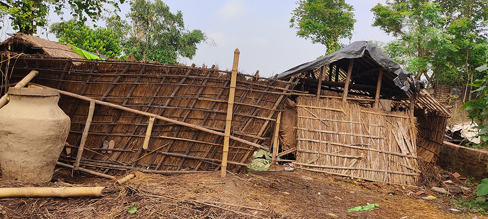

সংশ্লিষ্ট এলাকার নদীভাঙন ও বিপর্যস্ত জনজীবনের ভিডিও। তুলেছেন লেখক।
চিৎকার করে গালাগালি করছিলো বুড়ো মানুষটা-হাড়জিরজিরে চেহারায় পাঁজর কাঁপিয়ে একের পর এক অভিসম্পাত আছড়ে
পড়ছিলো গঙ্গা আর গঙ্গার ভাঙন দেখতে আসা মানুষগুলোর উপর। অনেকটা দূরত্বে থেকেও ভিতরে ভিতরে কুঁকড়ে যাচ্ছিলো
ঋষি আর সিদ্ধার্থ। এবারের সঙ্গী অসীমদা তাদেরকে বলে, " কান দিও না, আবার উত্তর করতেও যেও না...হাওয়া এখনো
গরম আছে"। চতুর্দিকের আমবাগানে ছড়িয়ে ছিটিয়ে রয়েছে ঘরকন্নার উপকরণ, বিচালির আঁটি, ভাঙা ইঁটপাথরের
টুকরো-জায়গাটা কালিয়াচক ব্লক-৩ এর অন্তর্গত বীরনগর-১ গ্রাম পঞ্চায়েতের অধীন দুর্গারামটোলা আর চিনাবাজার
গ্রাম। আসলে, গঙ্গার ধারে ধরে এগোতে থাকলে তিনটি গ্রাম পরপর চোখে পড়ে-ভীমাগ্রাম, দুর্গারামটোলা আর
চিনাবাজার। প্রথমটি কোনমতে রক্ষা পেলেও দ্বিতীয় আর তৃতীয় গ্রামদুটি মানচিত্র থেকে প্রায় মুছে যাওয়ার
পথে। ৩০ আগস্ট রবিবার সকাল ৯টা থেকে দুপুর ১টা আর ৩ সেপ্টেম্বর বৃহস্পতিবার দুপুর ২টো থেকে ৪টে পর্যন্ত
ভয়াবহ গঙ্গা ভাঙন এই দুই গ্রামের প্রায় ২০০ পরিবারকে আক্ষরিক অর্থেই পথে বসিয়ে দিয়েছে-এই সময়কালের
মধ্যেই প্রায় ২৫০টি বাড়ি হারিয়ে গেছে গঙ্গাগর্ভে।
বৈষ্ণবনগরের ষোলো মাইল আর আঠারো মাইলের মাঝে অপেক্ষাকৃত অখ্যাত স্টপেজ সতেরো মাইল-সেখানেই দাঁড়াতে বলেছিলেন
অসীমদা। এই দলে তিনি সকলের থেকে বয়সে বড়ো, অভিজ্ঞতাতেও-স্থানীয় বাসিন্দা হওয়ার সুবাদে জীবন তাঁকে ঘাড়
ধরে শিখিয়ে দিয়েছে অনেককিছু... শিকড়ের টান এড়াতে না-পারা অসীমদা যেকোন বিপদে মানুষের পাশে দাঁড়ানোর নেশা
এই মধ্য চল্লিশেও এড়াতে পারেন না। গাড়িতে উঠেই তিনি সরাসরি বলে দেন-সতেরো মাইলের রাস্তা ভাঙাচোরা বটে,
কিন্তু এই রাস্তা ধরে এগোলে পুরো এলাকাটা দেখা যাবে... আর গাড়ি বেশিদূর এগোবেও না, সামনের একটা বড়ো
বটগাছের নিচে গাড়ি রেখে হেঁটেই যেতে হবে-রাস্তা গঙ্গা কেটে দিয়েছে। ঋষি জানতে চায়, মালদা জেলার ভাঙন
মানচিত্রে এই এলাকা তো নতুন সংযোজন-এখানে শেষবার ভাঙন কবে হয়েছে? অসীমদা তৎক্ষণাৎ বলেন, ২০১৬-১৭ সালে পুজোর
আগে আগে চিনাবাজার সংলগ্ন সরকারটোলা আর দুর্গারামটোলা গ্রামদুটির প্রায় দুশো বাড়ি রাতারাতি তলিয়ে
গিয়েছিল গঙ্গাগর্ভে। এন টি পি সি-সেচ দপ্তর (পড়ুন, "কেন্দ্র-রাজ্য") বিস্তর চাপান উতোরের পর সরকারটোলা
গ্রামের ভাঙনবিধ্বস্ত অংশটি ভরাট করা হয়েছিল ফারাক্কা এন টি পি সি র ফ্লাই অ্যাশ দিয়ে। এর সঙ্গে পরিকল্পনা
করা হয় ঐ অংশে একটি মার্জিনাল বাঁধ তৈরি করতে হবে। কোনমতে অস্থায়ী বাঁধের স্ট্রাকচার খাড়া করা হলেও কাজ
যে তিমিরে সেই তিমিরেই থেকে গেছে আজও।আর ঐ অস্থায়ী মার্জিনাল বাঁধের দুর্বল অংশ দিয়ে ৩০ আগস্ট প্রথম দফায়
হু-হু করে জল ঢুকতে থাকে চিনাবাজার এলাকায়। কয়েকঘন্টার মধ্যে চল্লিশটি বাড়ি চলে যায় গঙ্গাগর্ভে।
প্রশাসনের পক্ষ থেকে মাইকিং করে সতর্কতামূলক প্রচার শুরু হয়। পাশাপাশি স্থানীয় বাসিন্দারা আতঙ্কে নিজেরাই
উদ্যোগ নিয়ে শতাধিক পাকা বাড়ি ভেঙে শেষ সম্বল বাঁচানোর চেষ্টা শুরু করেন। সেই বিবরণ স্তব্ধ হয়ে শুনছিলো
ঋষি আর সিদ্ধার্থ। তারা হিংস্র নদী দেখেছে, কিন্তু হিংস্রতর জীবনসংগ্রামের এই ছবি তাদের কাছে অচেনা।বৃদ্ধ
চিৎকার করে বলতে থাকেন, গ্রামের মানুষ ছাড়া যারা এখানে আসছে, তাদের প্রত্যেকের থেকে একটা করে জিনিস কেড়ে
নিলেই নিজেদের ঘর সেজে উঠবে, আর অন্যান্যদের মজা দেখাও বন্ধ হয়ে যাবে!

অসীমদা এলাকার মানুষদের সঙ্গে কথা বলে ঋষিকে বোঝান, ২০১৬-১৭ থেকে ফারাক্কা ব্যারেজ কতৃপক্ষ মার্জিনাল বাঁধটি
তৈরি করার দায়িত্ব নিলেও সে কাজ একচুল এগোয়নি। কোনমতে বালির বস্তা ফেলে জোড়াতালি না দিয়ে পাথর বা
বোল্ডার ফেলে একটা স্থায়ী সমাধান করাই যেত...কাটমানি-কমিশনের অচ্ছেদ্যচক্র বিষয়টাকে সেদিকে গড়াতে দেয়নি।
অনেকে আবার এও বলেন, ফারাক্কা ব্যারেজের ১০৮ ও ১০৯ নম্বর গেট খুলে দেওয়ার ফলে এই "ম্যান মেড" বন্যা
পরিস্থিতির উদ্ভব...ঋষির মাথায় এসব কিছু ঢোকে না। তার মনে পড়ে যায় মিহির সেনগুপ্তের অসামান্য উপন্যাস
"সিদ্ধিগঞ্জের মোকাম"এর সেই শুরুর বিবরণের কথা-দুর্গাপুজোর পঞ্চমী থেকে গ্রামে বন্যার জল ঢুকছে, আর ফাঁকা
দুর্গা মণ্ডপে দাঁড়িয়ে এক বৃদ্ধ একেবারে মা-বাপ তুলে গালাগাল করছেন মা দুর্গাকে... কোন ক্রোধ " সংগত",
কোনটাই বা "অসংগত"-কে তার বিচার করবে? নানা দলীয়-উপদলীয় রাজনীতির ছক? আবহমান জনজীবনের লোকবিশ্বাস? নাকি
ইতিহাসের সেই অধিদেবতা, যিনি ভূগোল নিয়েও লোফালুফি খেলেন তাঁর অনেকগুলো অদৃশ্য হাতে?
দ্বিতীয় দফায়, ৩ সেপ্টেম্বর দুপুরের দিকে একই জায়গায় আছড়ে পড়ে ভাঙনের দ্বিতীয় পর্যায়-আবারও একই
ঘটনার পুনরাবৃত্তি। এই প্রবল বিপর্যস্ত সময়ে ট্রাক্টরে করে জিনিসপত্র সরানোর কাজ করেছিলেন ফিরোজ শেখ-আনমনে
একা একাই বসেছিলেন জলের ধারে। ছোটখাটো শক্তপোক্ত চেহারা... রং জ্বলা নীল গেঞ্জি আর কালো বারমুডা, তার উপর
সাদা অক্ষরে লেখা:"আপনা টাইম আয়েগা"। নিজের মনে কথা বলার মতো করেই ওদের তিনজনকে বলতে থাকেন অনেক কথা...
প্রত্যেকবার এই সময়টাতেই ভাঙনটা হয়। সবাই জানে, তবু কেউ কিছু বলেও না, করেও না... সব শেষ হয়ে যাওয়ার পর
চাল ডালের প্যাকেট দিতে আসে... এভাবেই চলছে;আর এভাবেই চলবে... সমস্যা থেকে পালানো যেতে পারে বড়জোর, সমস্যা
থেকে মুক্তি নেই।
সিদ্ধার্থ পরিস্থিতি একটু হালকা করার জন্য বারমুডার লেখাটার দিকে আঙুল দেখিয়ে বলে, "শুনেছ গানটা? আপনা টাইম
আয়েগা... সে-ই গান, না? " ফিরোজ হাসে না-তিনজনের দিকে স্থির চোখে তাকিয়ে বলে, "তোমরা শুনেছ ভালো করে?
আমাদের কথাই তো বলা হয়েছে ও গানে-তু নাঙ্গা হি তো আয়া হ্যায়/ক্যা ঘন্টা লেকে জায়েগা? " গঙ্গার তেজি
হাওয়া যেন মুহূর্তের জন্য থমকে যায় ফিরোজের উত্তরে... অসীমদা ফিরোজের দিকে একটা সিগারেট এগিয়ে দেওয়ার পর
এই গুমোট ছবিটা ভাঙে, সবাই স্বাভাবিক নিঃশ্বাস ফেলে! ঋষি সকলের অলক্ষ্যে সিদ্ধার্থের মাথার পিছনে একটা আলতো
চাঁটি মারে-ঠিক হয়নি... একেবারেই ঠিক হয়নি!মানুষের যন্ত্রণা নিয়ে শিল্প হতে পারে, কিন্তু যন্ত্রণাটাই যখন
শিল্প হয়ে ওঠে-তখন চুপ করে থাকাটাই নিয়তি-আর সেটা মেনে নিতেই হয়। বৃদ্ধের ক্লান্ত চিৎকার থেমেছে... কয়েক
পুরুষের ভিটেমাটি ছেড়ে যাওয়ার আশঙ্কার মেঘ যখন সমবেত মুখগুলোয় অন্ধকারের ছায়া ফেলেছে, তখনই আবার গঙ্গার
এলোমেলো হাওয়ার ঝাপটা সকলকে নাড়িয়ে দেয়। ত্রিপলটানা একটুকরো গেরস্থালির বাঁশের খুঁটি থেকে ঝোলানো বিবর্ণ
খাঁচায় ময়না ক্রমাগত ডানা ঝাপটায়...মালকিনের গলা নকল করে তারস্বরে চেঁচিয়ে ওঠে:"কুটি যাচ্ছেন মা?ওম্মা,
কুটি যাচ্ছেন? " হাওয়ায় হাওয়ায় সে ডাক একসময় হারিয়ে যায়...
ফিরতি পথে নওদা-যদুপুরের কাছে কায়স্থপাড়ার দুর্গামণ্ডপে অসীমদার আগ্রহে সামান্য সময় দাঁড়িয়েছিলো তারা।
তখনই শ্রাবণ সংক্রান্তির মনসাপূজা উপলক্ষে নারী-পুরুষ দুই ভক্তা বিচিত্র অপরিচিত সুরে মনসার গান আরম্ভ করে
তাদের সামনে। সিদ্ধার্থ বাংলা সাহিত্যের ছাত্র... সে বাকিদের বোঝায়:রাঢ়ের গ্রামাঞ্চলে নিম্নবর্গের মধ্যে
প্রচলিত মনসাগানে কোন অন্ত্যমিল নেই, একটিমাত্র ধ্রুবপদকে কেন্দ্র করে তাদের আকুল আকাঙ্ক্ষার বিস্তার...তার
কথায় মাথা নাড়তে নাড়তে ঋষি খেয়াল করে," আরে বালি তোর বদন দেখিয়া প্রাণ যায় রে" র ধুয়াটুকু সম্বল করে
তারা দুজন এক গভীর বিষাদাশ্রয়ী গান গাইতে গাইতে আশা আকাঙ্ক্ষার পূর্ণতা,রোগ শোক থেকে মুক্তি, পরমায়ু
বৃদ্ধি ও মঙ্গলের অঙ্গীকার প্রার্থনা করছে... অসীমদা খোঁজ নিয়ে জানান, সরকারটোলায় তাদের বাড়ি টেনে
নিয়েছিল গঙ্গা! সেই ভাঙন থেকে, তার স্মৃতি থেকেও তো মুক্তি পেতে চায় তারা-হয়তো মুক্তি দিতেও চায়, ঋষি
ভাবে।
চকিতে তার মনে পড়ে যায় নিজের অভিজ্ঞতার কথা-মালদা টাউন স্টেশন থেকে কলকাতাগামী ট্রেনে উঠে ফারাক্কা ব্রিজ
এলেই বরাবর দরজার কাছে চলে যায় ঋষি। অভিজিৎ সেনের উপন্যাসে পড়া একটা দৃশ্যের কথা প্রত্যেকবার মনে পড়ে
যায় তার:চল্লিশ হাজার কিউসেকের শব্দ আর স্রোতের মধ্যে কলার ভেলায় শোয়ানো এক আট-দশ বছরের বালকের মৃতদেহ।
ঋষি স্পষ্ট দেখে, রঙিন কাগজ আর ফুল দিয়ে ভেলাটাকে একটা মঠের আকৃতি দেওয়া হয়েছে;আর তার মাথার উপরে একটা
হলদে রঙের শোলার হাঁস। লকগেটের লোহার চাদরে ভেলাটি সেই মৃত বালকটিকে নিয়ে দোল খাচ্ছে, ঘুরছে, দেয়ালে
ধাক্কা খাচ্ছে। কিন্তু ব্যারেজের প্রতিবন্ধকতা সেই বালককে তার মা-বাবা-জ্ঞাতিদের অভীপ্সা মতো নেতাধোপানির
ঘাটে পৌঁছতে দেয়নি...যে পরিকল্পনাহীন প্রতিবন্ধকতা বছরের পর বছর একই ভাঙনের ছবি তৈরি করে-তারও কি দিশা থাকে
কিছু? ঋষি ভাবে, আমরা তো কেউ নেতাধোপানির ঘাট পর্যন্ত পৌঁছতে পারি না... কেন পারি না আমরা? সুজাপুরের জ্যাম
কাটিয়ে জাতীয় সড়কে পড়েছে গাড়ি... ঋষি অ্যাকসেলারেটারে চাপ বাড়ায়... লেখা এখন হু-হু করে এগিয়ে নিয়ে
যাচ্ছে তাকে!
সংশ্লিষ্ট এলাকার নদীভাঙন এবং জনজীবনের ছবিগুলি তুলেছেন লেখক ।
{kind=link}
{kind=link}
{kind=link}
{kind=link}
{kind=link}